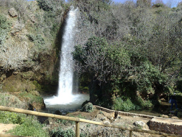

Saliendo de Navarrés, en dirección Quesa, se encuentra "Los Chorradores", atractivo salto de agua natural rodeado de frondosa vegetación. Como puedes comprobar, se trata de un lugar ideal para pasar el día ya que el paraje dispone de zonas acondicionadas con mesas y bancos para comer. Perfecto para ir en familia o con amigos, disfrutando al máximo de esta experiencia rodeados de naturaleza.